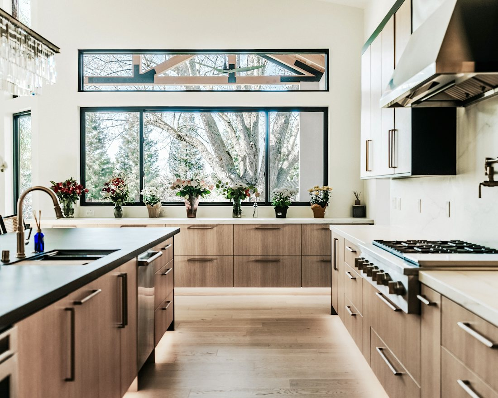
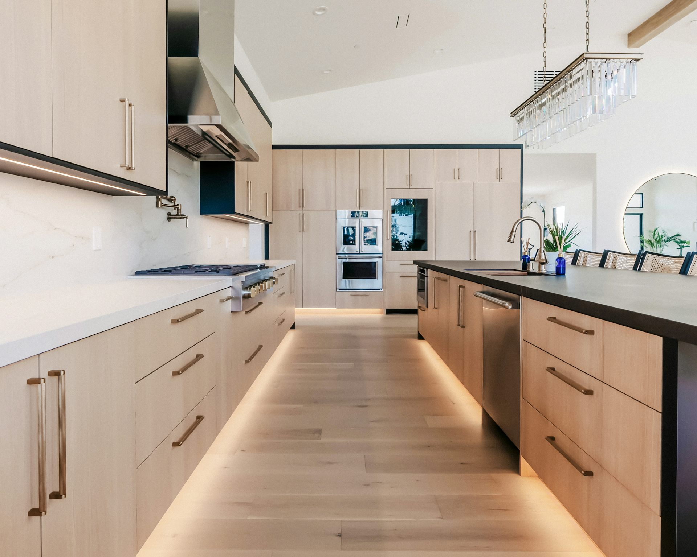
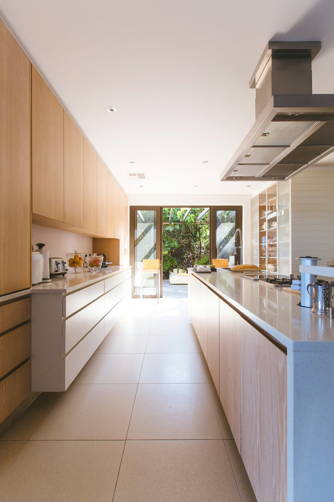
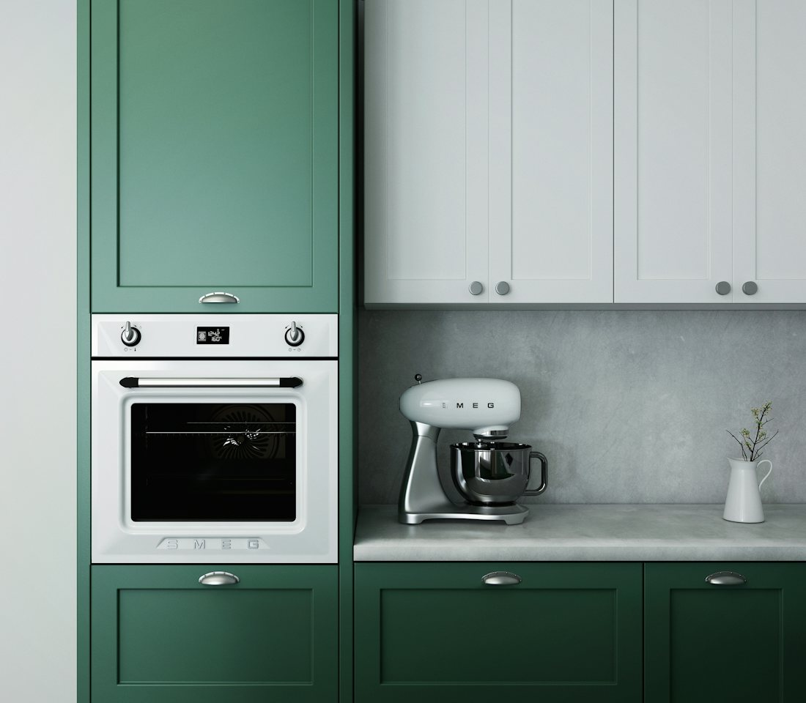
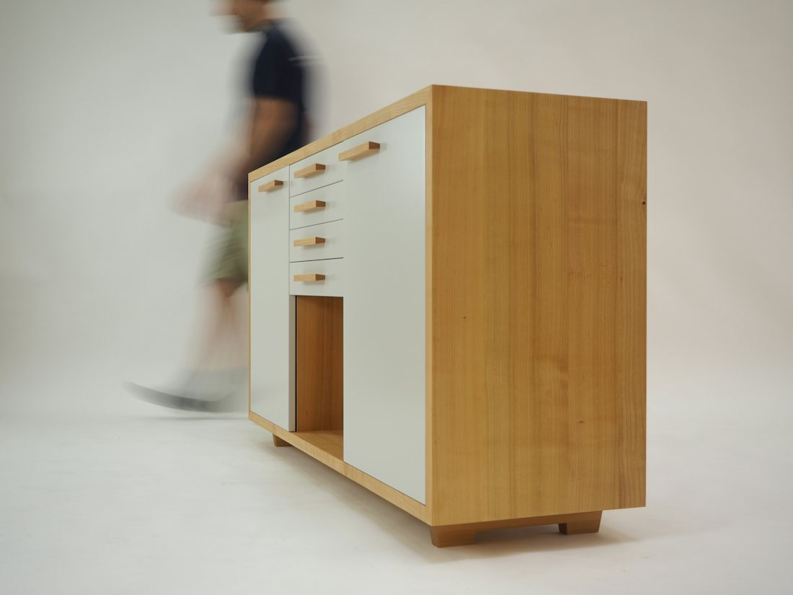
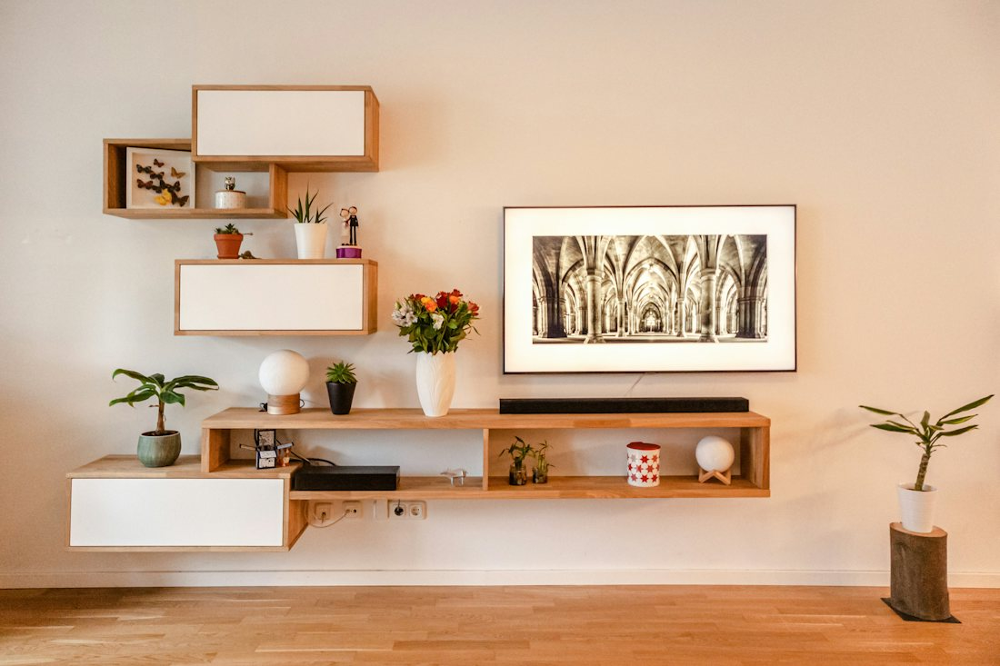
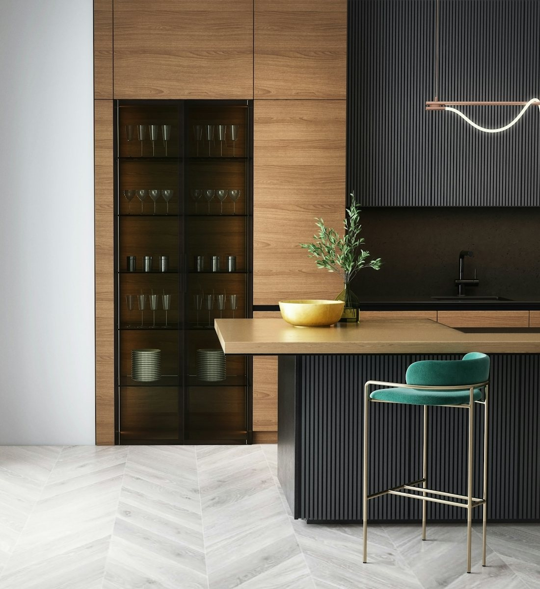
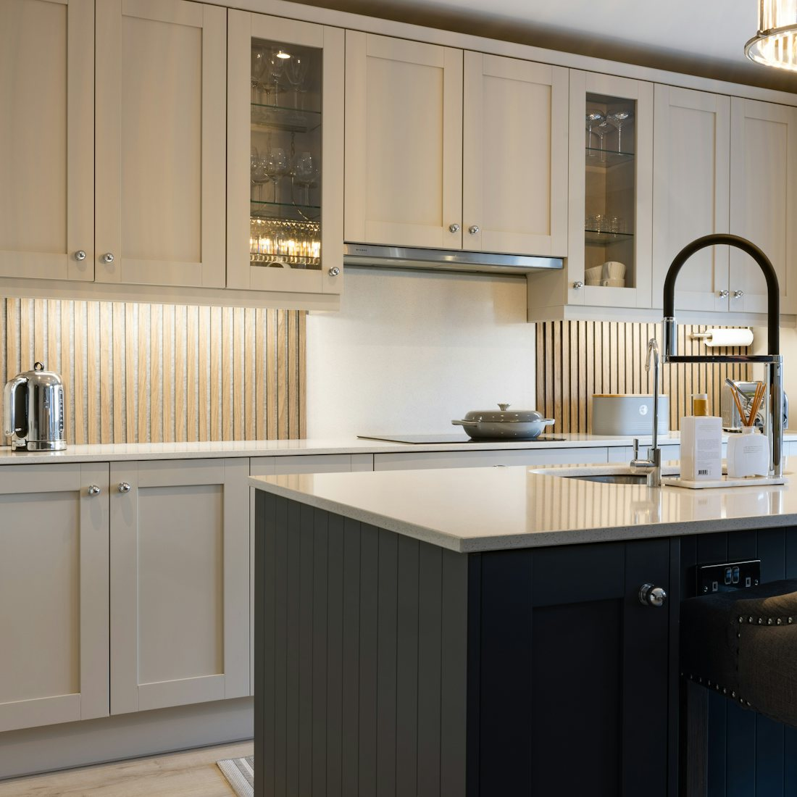
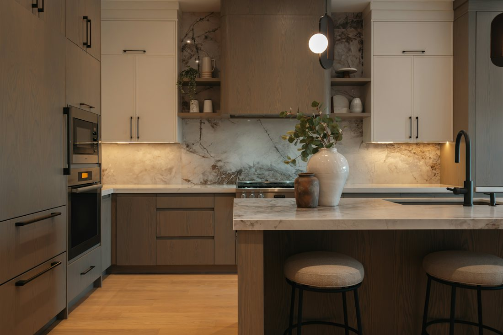

Cozinhas
Armários, ilhas e torres para eletros, na medida da parede.

A Totum Móveis Planejados projeta móveis sob medida em Santo Amaro da Imperatriz - SC. Conte o ambiente e peça seu orçamento.
Móvel planejado aproveita cada centímetro: parede a parede, do chão ao teto, do jeito que a casa pede. A Totum Móveis Planejados atende em Santo Amaro da Imperatriz - SC e faz o orçamento a partir do seu ambiente.
Começar meu projeto
Exemplos de ambientes para planejar. Consulte pelo WhatsApp o que a Totum produz para o seu projeto.

Armários, ilhas e torres para eletros, na medida da parede.

Guarda-roupas e closets organizados para o que você tem.

Gabinetes e armários que aproveitam espaços pequenos.

Painéis, nichos, estantes e bancadas de trabalho.
Fotos ilustrativas de banco de imagens (Unsplash). Não são projetos da Totum.



Escolha o ambiente e a fase do imóvel. A mensagem abre pronta no WhatsApp da Totum.
Como começa um projeto?
Chame no WhatsApp, diga o ambiente e mande fotos e medidas, se tiver. A equipe orienta os próximos passos para o orçamento.
Preciso ter as medidas exatas?
Não. Medidas aproximadas ajudam no primeiro contato; as definitivas são conferidas antes da produção.
Vocês atendem fora de Santo Amaro da Imperatriz?
Informe a cidade e o bairro pelo WhatsApp. A equipe confirma se atende a sua região.
Qual o prazo de entrega?
Depende do projeto. O prazo é informado junto com o orçamento.
A Totum fica em Santo Amaro da Imperatriz, na Grande Florianópolis. O mapa mostra a cidade; o endereço e a área de atendimento são confirmados pelo WhatsApp.
Consultar atendimento